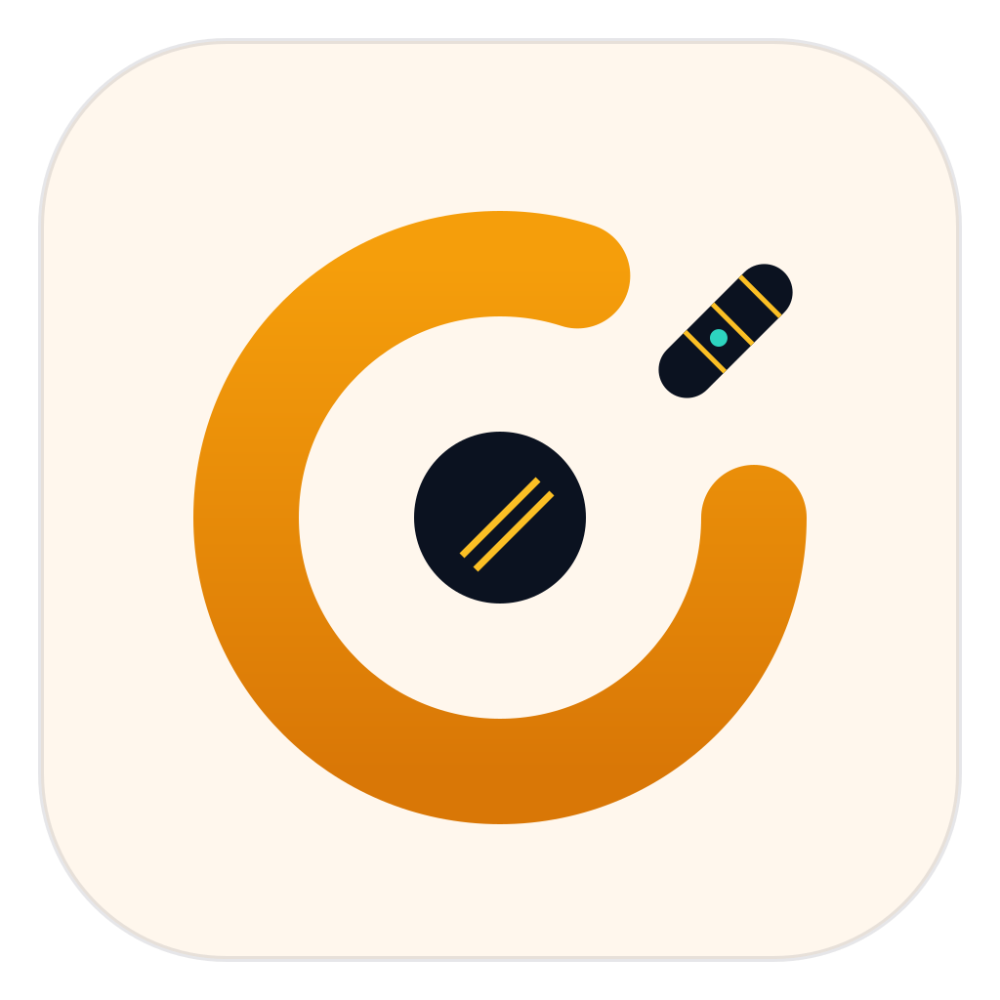
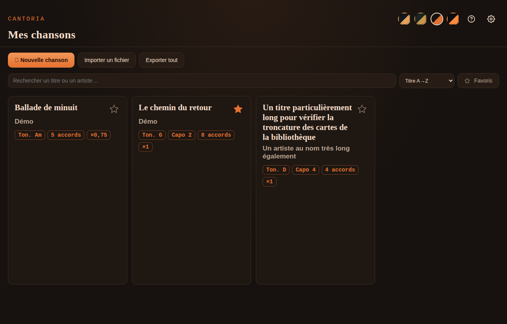
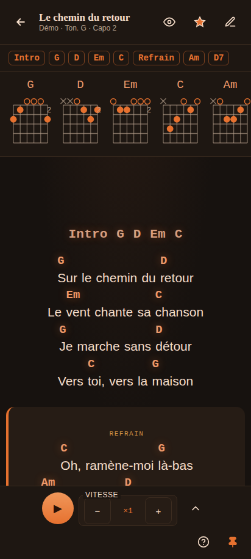

Le carnet de chants
qui défile tout seul
Paroles et accords à défilement automatique, 100 % hors-ligne — pour chanter en jouant de la guitare, les mains occupées.
Ouvre une chanson,
lance le défilement, joue.
Plus besoin de tourner les pages au milieu d'un morceau. Le texte avance à ta vitesse, assez grand pour être lu de la scène, avec les accords juste au-dessus des paroles.
Tout pour le live, rien de superflu
Lecteur à défilement
Vitesse, taille du texte, décompte et surbrillance de la ligne en cours — pilotés au clavier, sans toucher la souris.
Accords & transposition
Format ChordPro, diagrammes d'accords, capo et transposition d'un demi-ton en direct pendant le morceau.
Setlists
Enchaîne tes chansons en concert, avec un réglage par entrée, et un seul geste pour passer à la suivante.
Hors-ligne, local d'abord
Aucun compte, aucun cloud : tes chansons restent sur ta machine, avec copies de secours automatiques.
Windows · macOS · Linux · Android


Prêt à jouer ?
Installeurs Windows / macOS / Linux et APK Android sur la dernière release. Gratuit, open source (MIT), sans compte.
Hors-ligne · Données locales · Licence MIT — en savoir plus